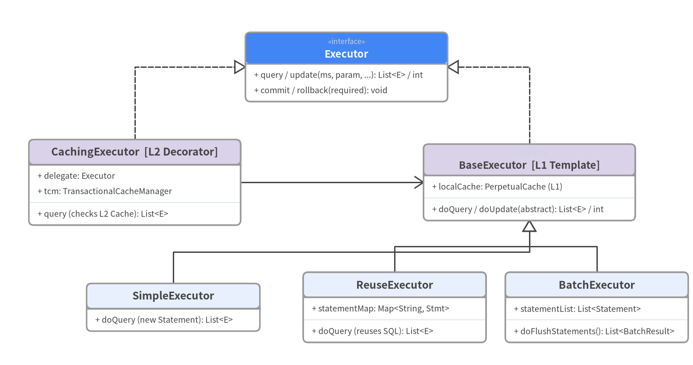
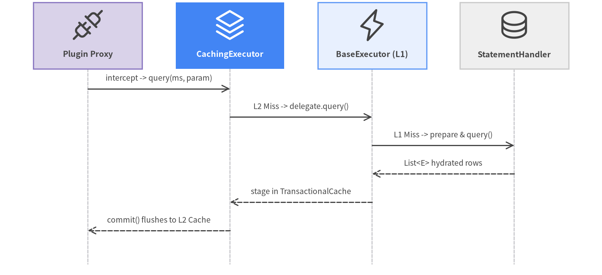

4. Executor Pipeline, L1/L2 Caching & Plugin Interceptors
Every SqlSession delegates database operations to an org.apache.ibatis.executor.Executor created via Configuration.newExecutor(Transaction, ExecutorType) (src/main/java/org/apache/ibatis/session/Configuration.java:743-760). This factory method combines three classic Gang-of-Four patterns in 15 lines of code:
- Template Method (
BaseExecutor): Implements L1PerpetualCachelookup, deferred nested query loading, and transaction flushing while delegating low-level JDBC statement execution toSimpleExecutor,ReuseExecutor, orBatchExecutor. - Decorator (
CachingExecutor): Wraps theBaseExecutorwhencacheEnabled = true(default) to provide transactional L2 namespace caching viaTransactionalCacheManager. - Dynamic Proxy Chain (
InterceptorChain.pluginAll): WrapsExecutor,StatementHandler,ParameterHandler, andResultSetHandlerin JDK dynamic proxies (Plugin.wrap) for any registered@Interceptsplugins.

Source Code
from drawlib.canvas import save, setup
from drawlib.diagrams.class_diagram import ClassDiagram, ClassNode
from drawlib.fonts import FontMonoSpace, FontRoboto
from drawlib.styles import Colors, Styles
setup(width=144, height=76, dpi=150)
cd = ClassDiagram(
width=144.0,
height=76.0,
node_style=Styles.Neutral.patch(
shape_fill_color=Colors.White,
shape_line_color=Colors.Gray6,
text_color=Colors.Dark,
text_font=FontMonoSpace.ROBOTO_MONO_REGULAR,
text_size=9.2,
),
header_style=Styles.PrimaryNeutral.patch(
shape_line_color=Colors.Gray6,
text_color=Colors.Dark,
text_font=FontRoboto.ROBOTO_BOLD,
text_size=9.8,
),
edge_style=Styles.Dark.patch(line_width=1.4),
edge_text_style=Styles.DarkBold.patch(text_font=FontRoboto.ROBOTO_BOLD, text_size=9.2),
)
hero_hdr = Styles.PrimaryFlat.patch(text_color=Colors.White, text_font=FontRoboto.ROBOTO_BOLD, text_size=9.8)
sec_hdr = Styles.SecondaryNeutral.patch(shape_line_color=Colors.Gray6, text_color=Colors.Dark, text_font=FontRoboto.ROBOTO_BOLD, text_size=9.8)
n_exec = cd.add(
ClassNode("Executor", stereotype="interface", width=42.0, header_style=hero_hdr)
.add_method("query / update", "ms, param, ...", "List<E> / int")
.add_method("commit / rollback", "required", "void"),
xy=(72.0, 62.0),
)
n_cache_exec = cd.add(
ClassNode("CachingExecutor [L2 Decorator]", width=44.0, header_style=sec_hdr)
.add_attribute("delegate", "Executor")
.add_attribute("tcm", "TransactionalCacheManager")
.add_method("query (checks L2 Cache)", "ms, key", "List<E>"),
xy=(28.0, 38.0),
)
n_base_exec = cd.add(
ClassNode("BaseExecutor [L1 Template]", stereotype="abstract", width=44.0, header_style=sec_hdr)
.add_attribute("localCache", "PerpetualCache (L1)")
.add_method("doQuery / doUpdate", "abstract", "List<E> / int"),
xy=(110.0, 38.0),
)
n_simple = cd.add(
ClassNode("SimpleExecutor", width=36.0)
.add_method("doQuery (new Statement)", "", "List<E>"),
xy=(36.0, 12.0),
)
n_reuse = cd.add(
ClassNode("ReuseExecutor", width=38.0)
.add_attribute("statementMap", "Map<String, Stmt>")
.add_method("doQuery (reuses SQL)", "", "List<E>"),
xy=(82.0, 12.0),
)
n_batch = cd.add(
ClassNode("BatchExecutor", width=38.0)
.add_attribute("statementList", "List<Statement>")
.add_method("doFlushStatements", "", "List<BatchResult>"),
xy=(124.0, 12.0),
)
cd.connect(n_cache_exec, n_exec, "realization", start_side="top", end_side="left")
cd.connect(n_base_exec, n_exec, "realization", start_side="top", end_side="right")
cd.connect(n_cache_exec, n_base_exec, "association", directed=True, start_side="right", end_side="left")
cd.connect(n_simple, n_base_exec, "inheritance", start_side="top", end_side="bottom")
cd.connect(n_reuse, n_base_exec, "inheritance", start_side="top", end_side="bottom")
cd.connect(n_batch, n_base_exec, "inheritance", start_side="top", end_side="bottom")
cd.draw(xy=(0.0, 0.0))
save()
Two-Tier Caching (L2 TransactionalCache -> L1 PerpetualCache -> JDBC)
When CachingExecutor.query() executes (src/main/java/org/apache/ibatis/executor/CachingExecutor.java:86-122):
CacheKeyComputation:BaseExecutor.createCacheKey()builds a compositeCacheKeyfrom[mappedStatement.id, rowBounds.offset, rowBounds.limit, boundSql.sql, parameterValues..., environment.id].- L2 Namespace Cache Lookup (
TransactionalCacheManager):- If the
MappedStatementhas a<cache/>or@CacheNamespace,CachingExecutorqueriesTransactionalCacheManager.getObject(cache, key). - Crucially, writes to L2 are staged inside a session-private
TransactionalCache(entriesToAddOnCommit) and are flushed to the shared namespaceCache(SynchronizedCache -> LoggingCache -> SerializedCache -> LruCache -> PerpetualCache) only whensqlSession.commit()succeeds. This prevents dirty reads across concurrent transactions! - When
SerializedCacheorAbstractSerialStateHolderdeserializes cached object bytes (CWE-502), MyBatis invokesSerialFilterChecker.check()(src/main/java/org/apache/ibatis/io/SerialFilterChecker.java) to verify JEP-290jdk.serialFilterprotection.
- If the
- L1 Session Cache Lookup (
BaseExecutor.localCache):- On an L2 miss,
BaseExecutor.query()checkslocalCache(PerpetualCache). - By default (
localCacheScope = SESSION), repeated identical queries within the sameSqlSessionreturn the L1 cached list unless aninsert/update/deleteorflushCache="true"clears it. Setting<setting name="localCacheScope" value="STATEMENT"/>clears L1 at the end of every statement (recommended in multi-instance/Spring deployments).
- On an L2 miss,

Source Code
from drawlib.canvas import save, setup
from drawlib.diagrams.sequence import Participant, PhosphorIcon, SequenceDiagram
from drawlib.styles import Styles
setup(width=144, height=66, dpi=150)
sd = SequenceDiagram(
node_style=Styles.Dark,
node_text_style=Styles.DarkBold.patch(text_size=9.6),
edge_style=Styles.Dark.patch(line_width=1.4),
edge_text_style=Styles.Dark.patch(text_size=9.2),
node_card_style=Styles.Neutral,
col_width=34.0,
step_y=6.8,
)
p_plugin = sd.add(Participant("Plugin Proxy", icon=PhosphorIcon.PLUGS, width=26, card_style=Styles.SecondaryNeutral))
p_c_exec = sd.add(
Participant(
"CachingExecutor",
icon=PhosphorIcon.STACK,
width=26,
style=Styles.White,
text_style=Styles.WhiteBold.patch(text_size=9.6),
card_style=Styles.PrimaryFlat,
)
)
p_b_exec = sd.add(Participant("BaseExecutor (L1)", icon=PhosphorIcon.LIGHTNING, width=26, card_style=Styles.PrimaryNeutral))
p_stmt = sd.add(Participant("StatementHandler", icon=PhosphorIcon.DATABASE, width=26, card_style=Styles.Neutral))
p_plugin.request(p_c_exec, "intercept -> query(ms, param)")
p_c_exec.request(p_b_exec, "L2 Miss -> delegate.query()")
p_b_exec.request(p_stmt, "L1 Miss -> prepare & query()")
p_stmt.reply(p_b_exec, "List<E> hydrated rows")
p_b_exec.reply(p_c_exec, "stage in TransactionalCache")
p_c_exec.reply(p_plugin, "commit() flushes to L2 Cache")
sd.draw(xy=(72, 33), align="center")
save()
How Plugin.wrap() Intercepts the 4 Pipeline Targets
MyBatis 3's plugin SPI (org.apache.ibatis.plugin.*) allows intercepting specific method signatures on the four pipeline interfaces:
Executor(update,query,flushStatements,commit,rollback,getTransaction,close,isClosed)ParameterHandler(getParameterObject,setParameters)ResultSetHandler(handleResultSets,handleCursorResultSets,handleOutputParameters)StatementHandler(prepare,parameterize,batch,update,query,queryCursor)
When Configuration instantiates any of these four objects, it calls interceptorChain.pluginAll(target). Plugin.wrap(target, interceptor) inspects the @Intercepts({@Signature(type=..., method=..., args=...)}) annotations on the Interceptor and wraps target in a JDK Proxy only if its class implements one of the annotated target interfaces. Inside Interceptor.intercept(Invocation invocation), calling invocation.proceed() forwards execution down the chain.